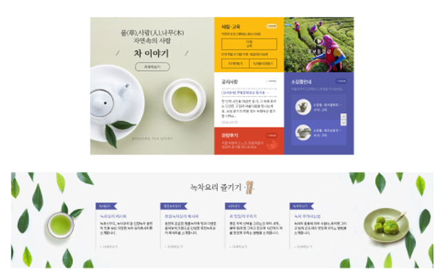
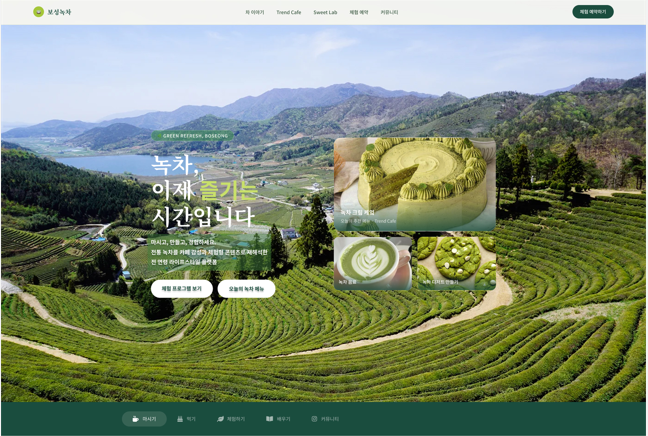

THE VISIONARY JOURNEY
과거의 기술(엔지니어링)과 현대의 혁신(AI)이 융합하여 서로 맞물려
돌아가는 역동적인 변화를 지향하고자 하며, 방사형으로 확장되어
나아감으로써 세상에
가치 있게 전달되는 모습을 형상화했습니다.
어제의 정밀함으로 내일의 지능을 설계합니다
40년 산업 현장 경험.
한 치의 오차도 허용하지 않는 정밀함과
시스템의 무결성을 최우선으로 하던
엔지니어링의 정수입니다.
AI 전문가로의 완벽한 변신.
LLM 아키텍처와 정교한 프롬프트
엔지니어링을 통해 물리적 세계를
디지털 지능으로 해석합니다.
모든 세대를 위한 혁신.
기술의 문턱을 낮추고 인간 중심적인 AI
애플리케이션을 통해 세대 간의 격차를
해소하는 리더가 됩니다.
ENGINEERING REBIRTH
"AI를 활용해
세대간의 유산과 온기를 잇는 가교"
반응형 웹 기술과 고성능 렌더링을 최적화하여
다양한 기기에서 일관된 고품질 사용자 경험을
보장합니다.
보성 고유의 색채와 형태를 현대적 그래픽 언어로
승화시켜 박물관의 디지털 브랜드 아이덴티티를
확립했습니다.
사용자 중심의 네비게이션 설계와 그리드 시스템
도입으로 정보 접근성을 개선하였습니다.


현실의 문제를 해결하는 AI 솔루션
시니어를 위한 AI 기반 복약 관리 솔루션입니다.
복잡한 기술을 숨기고 사용자 본질에 집중했습니다.
전통 길거리 음식을 현대적 시스템과 결합한 이커머스 플랫폼입니다. 문화적 헤리티지를 기술로 보존합니다.
40년의 경험과 AI의 가능성이 만났을 때 생기는 시너지를
제안서에서 확인해보세요.
귀사의 비즈니스에 엔지니어링급 신뢰를 더해드립니다.